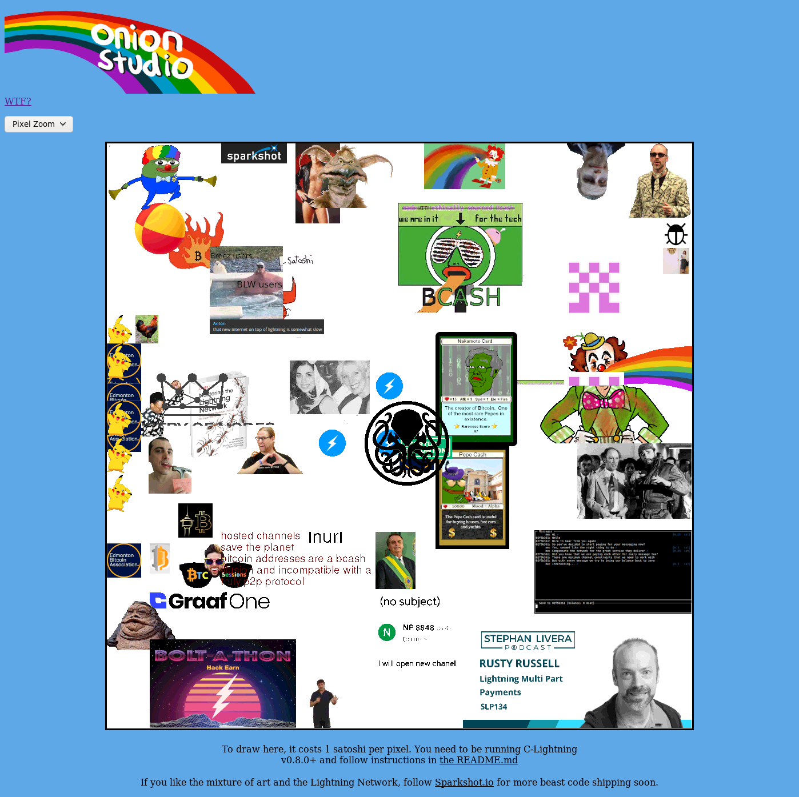

The running Onion Studio app was taken down since it served its purpose and was costing me money for hosting the backend server. This is what the page looked like at the end:

The code is still available on GitHub here
which has some notable stuff in it for sending messages over LN onion packets.
We also still have the W.T.F. up here: WTF?
If you like the mixture of art and the Lightning Network, go to
Sparkshot.io, which is the main project of Onion Studio's creator.